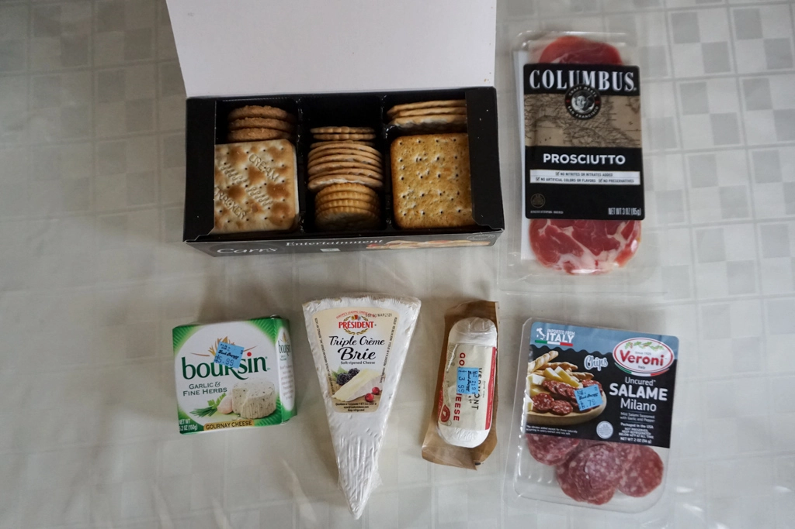
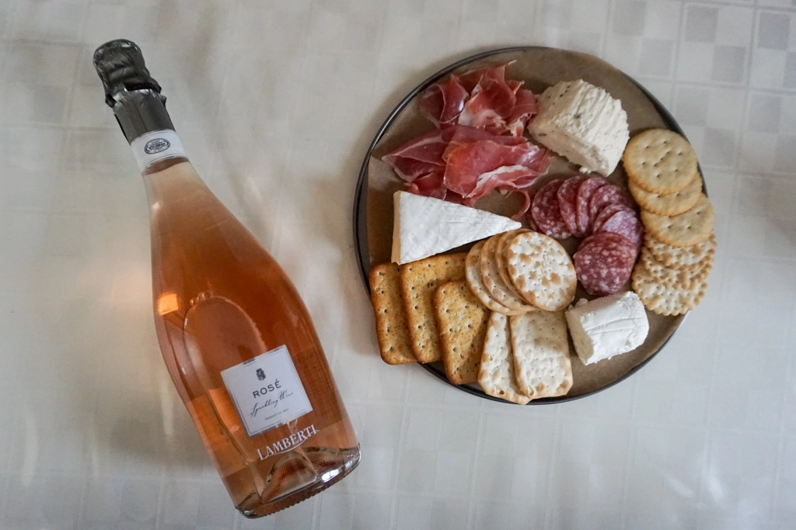

Making a Charcuterie Board
Feb 28 - Written by Bonnie and Emily

What’s better than cheese and cured meats? Wine paired with your board of cheese and cured meats! Its the perfect combination of ingredients to create the most delicious snack to have on a rainy weekend while lounging in your pjs and watching some TV.
As two cheese lovers with a craving for some soft cheese, we had to make ourselves a charcuterie board. If you’re not familiar with what that is, it’s essentially a board filled with cured meats, cheese, fruits, crackers, etc. It’s the perfect snack for a party or event or just a simple hang out with friends. Its the dish to serve as an appetizer since the large variety of items on the board, that could even be paired in different combinations, is enough to suit anyone’s taste!
Since it was just the two of us, we kept it very simple and only went with a small selection of cheeses and meats. We both are avid soft cheese lovers and mainly decided to select from a small section of soft cheeses only-- creating our soft cheese board! Emily opted for some brie as that is one of the only soft cheeses she knows and loves. Bonnie, a fan of goat cheese chose some original flavored goat cheese to pair with her crackers. She also discovered a new soft cheese, Boursin Gournay cheese, that came in a variety of different flavors but we went with the garlic and herb flavored option to try. It was surprisingly quite good and easy to spread, though it is a crumblier cheese so it can get a bit messy when spreading it on your crackers. The flavor in the cheese was just enough to give us a hint of its flavor while still allowing us to taste the natural flavor of the cheese!
We couldn’t just have cheese and crackers so we paired it with one of the best things to go with cheese and crackers--meat! We opted for one of Bonnie’s favorite types of cured meat, prosciutto, and also some salami that you really can’t go wrong with. Whether it's the cheese complimenting the meat or the other way around, cured meats and cheeses are the perfect bite sized snack packed full of different flavors.
Soft cheeses are more our type of cheese; however, there are some hard cheeses we like such as Gouda and Gruyere. Of course with a charcuterie board we also had to pair it with some wine! We grabbed the Rose that's been sitting in our fridge to make the perfect pairing of drinks and food for our day in!
As a cheese lover, Emily really isn’t all too familiar with different types of cheeses. She knows she doesn’t like goat cheese as the earthy taste isn’t for her, and she loves mozzarella and brie, but for all the other cheese out there, she doesn’t have a strong opinion for them. Bonnie on the other hand loves goat cheese, as well as a variety of different cheeses including brie, gruyere, and gouda.